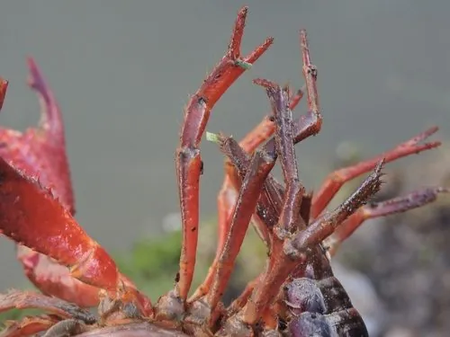

甲壳动物 · 动物界
克氏原螯虾 Procambarus clarkii

俗称小龙虾的淡水螯虾，原产北美，适应力极强，既是中国重要养殖品种，也是全球知名的外来入侵物种。
- 分类
- 门节肢动物门纲软甲纲目十足目科蝲蛄科属原螯虾属
- 栖息环境
- 池塘、稻田、沟渠与湖泊，善掘洞，耐低氧
- 地理分布
- 原产北美南部，现广泛分布于中国和世界各地
- 保护级别
- 暂无评估；被列为全球入侵物种
物种志
克氏原螯虾成虾体长约 7–13 cm，体重 20–50 g，体暗红褐或深褐色，螯足粗壮，表面有颗粒状突起，头胸甲有颈沟，腹部末端是宽大的尾扇，遇到危险时能快速倒退游动。
它适应力极强，能在低氧、富营养甚至短期干涸的水域生存，善于掘洞，杂食，取食水草、螺、小鱼、昆虫和腐殖质。雌虾一次可产卵数百粒，性成熟约需半年至一年。克氏原螯虾原产美国南部和墨西哥北部，20 世纪初经日本传入中国，如今是中国湖北、江苏等地的重要养殖品种，同时被列入中国外来入侵物种名单：掘洞破坏田埂和堤坝，捕食本地水生生物。食用时须彻底煮熟，以防寄生虫感染。
形态与习性
- 食性杂食，吃水草、螺、小鱼、昆虫与腐殖质
- 体长约 7–13 cm，体重 20–50 g
- 繁殖雌虾一次可产卵数百粒，性成熟约半年至一年
- 适应性耐低氧，可离水短时存活，能掘洞度过干旱
- 经济中国重要淡水养殖品种，产量居世界前列
- 入侵性掘洞破坏田埂堤坝，捕食本地水生生物
趣味知识
- 克氏原螯虾原产北美，20 世纪初经日本传入中国，如今已是养殖大户。
- 它们能在浅水中掘洞躲藏，干旱时靠湿润的洞穴存活。
- 小龙虾必须煮熟食用，生食可能感染肺吸虫等寄生虫。